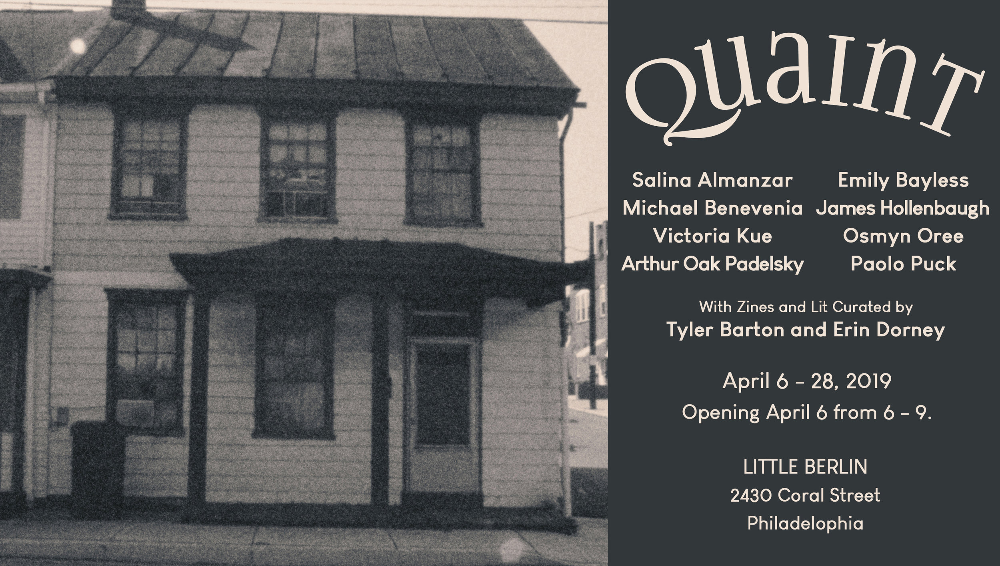

QUAINT - OPENING RECEPTION
April 2019
Saturday, April 6, 2019
Quaint is a non-exhaustive survey of emerging Lancaster-based visual and literary artists.
Lancaster is a small city. Our population falls just shy of 60,000 and our downtown is comprised of only a handful of city blocks. Most folks from outside of the area are only really familiar with us because of the colorful veneer of “Amish Country”, the outlet mall-based tourism or the amount of best-of lists we’ve been featured on in the past few years (which is confusing even to us).
We’re a city that is often romanticized or written-off all together. But for those of us living in Lancaster, it’s a home like any other where joy and disappointment bump shoulders passing in the hall and causes for both celebration and frustration are exchanged over dinner. Lancaster is a place where serious work is being done, frequently without fanfare or outside acknowledgment.
The goal of this show is to highlight folks living and working in Lancaster who are driving forward important conversations in their work ranging in topic from celebrations of racial heritage and yearning for communal belonging to the comedic and absurd to frank views of sex, community and assault. The stories are real and offer a slice-of-life view into the experiences of artists living in a place that typically only ever garners a passing glance and a reputation for being quaint.
Quaint includes visual art by Salina Almanzar, Emily Bayless, Michael Benevenia, James Hollenbaugh, Victoria Kue, Osmyn Oree, Arthur Oak Padelsky and Paolo Puck. This exhibition was curated by Henry Gepfer
Also on view is a selection of Lancaster-based literature and zines curated by Tyler Barton and Erin Dorney. This selection includes work by Salina Almanzar, Mike Andrelczyk, Erik Anderson, Tyler Barton, Jamie Beth Cohen, Meg Day, John Salvino and Annajane Dauphine, Erin Dorney, Fledgling Rag, Elizabeth Gonzalez, Le Hinton, Meghan Kenny, Travis and JenMarie Macdonald, Libby Modern, Nicholas Montemarano, Jeff Rath, Daina Savage, Lina Seijo, Halley Weaver, Jennifer Hill and Dan Waber, and Jacob Ross Yohn.
